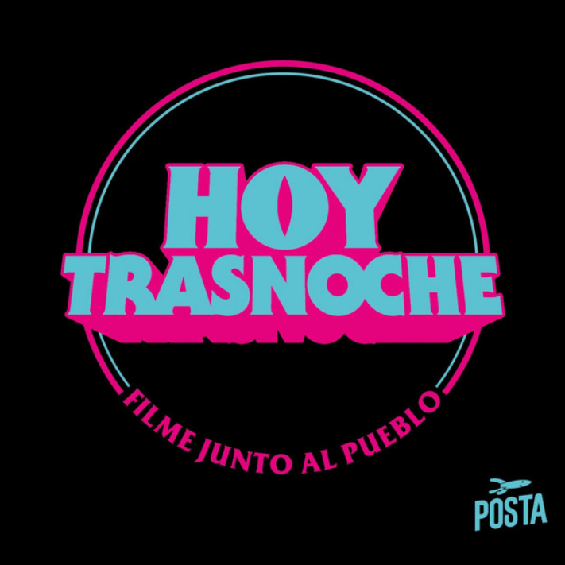

Para vos las fiestas son como Tinder
17 dic. 2020 · 56min.
A todos nos puede aparecer un hermano
10 dic. 2020 · 44min.
El Ventura de Welles
04 dic. 2020 · 65min.
AGNOROP YOH
03 dic. 2020 · 37min.
El episodio Mel Gibson
26 nov. 2020 · 60min.
Bacheo y repavimentación
19 nov. 2020 · 59min.
Never go full Santiago del Estero
29 oct. 2020 · 58min.
El glory hole de Hoy Trasnoche
22 oct. 2020 · 60min.
ACÁ VA EL TÍTULO
08 oct. 2020 · 70min.
Uf, qué fuerte, man
01 oct. 2020 · 54min.
Cuando Cristian U termine la facultad
24 sep. 2020 · 58min.